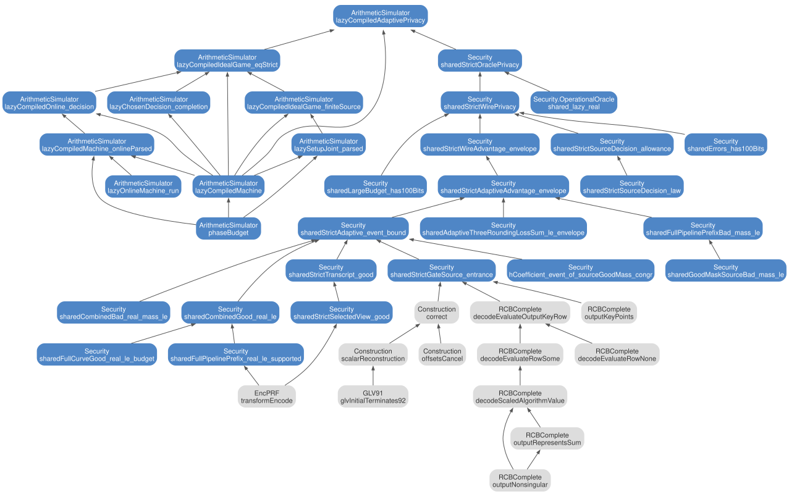

3 Adaptive privacy
The root is theorem 45. The requirement is the work-per-advantage level of Lemma 14: every adversary with work \(T\) has advantage \(\delta \) with \(T / \delta \geq 2^{100}\). The proof follows the H-coefficient technique of Lemma 13 in the programmable random permutation model, with the bad transcripts of Definition 20, the bad-transcript mass \(\varepsilon _1\) of Claim 11, and the good-transcript ratio of Claim 12. The simulator \((\mathsf{Sim}_1, \mathsf{Sim}_2)\) of Construction 3 is compiled to a bounded machine. Figure 3.1 shows the proof tree. Grey nodes belong to the perfect correctness chapter.

3.1 Statements from the paper
A garbling scheme is \(\epsilon \)-adaptively private if there is a simulator \(\mathsf{Sim} = (\mathsf{Sim}_1, \mathsf{Sim}_2)\) such that for every adversary \(\mathcal{A}\), every circuit \(C\), and every auxiliary input \(\mathsf{aux}\):
The adversary chooses the input \(x\) after it sees the garbled circuit. The Lean statement bounds the advantage by the work of the adversary: \(T / \delta \geq 2^{100}\) with \(T = q + 1\). Formalized by ??.
Suppose \(\mathsf{GC}_3\) is \(\epsilon _3\)-adaptively private and \(\mathsf{GC}_5\) is \(\epsilon _5\)-adaptively private. Suppose the PRF \(\mathsf{CTPRF}\) used in \(\mathsf{GC}_3\) and \(\mathsf{GC}_5\) is modeled as a programmable random permutation and \((\mathsf{Enc}, \mathsf{Dec})\) is \(\epsilon _2\)-CPA secure. Then the garbling scheme \(\mathsf{GC}\) of Fig. 21 is \((\epsilon _2 + \epsilon _3 + \epsilon _5)\)-adaptively private. The proof is a sequence of hybrids; \(\mathsf{Hyb}_0\) is the real experiment. Formalized by theorem 47 for \(\mathsf{Hyb}_0\).
Suppose the PRF \(\mathsf{CTPRF}\) used in \(\mathsf{GC}_{23}\) and \(\mathsf{GC}_{45}\) is modeled as a programmable random permutation. Suppose \((\mathsf{Enc}, \mathsf{Dec})\) is \(\epsilon _2\)-CPA secure and is implemented with \(\mathsf{EncPRF}\) as in claim 7, where each permutation \(\mathsf{P}_{w,i}\) is a programmable random permutation and \(\mathsf{SHA256}\) is a random oracle. Then the optimized garbling scheme \(\mathsf{GC}^{\mathrm{opt}}\) of Fig. 29 satisfies \((\epsilon _2 + \mathsf{negl}(\lambda ))\)-adaptive privacy. Formalized by ??.
Fix a deterministic adversary. For every attainable transcript \(\tau \) and every world \(b \in \{ \mathrm{real}, \mathrm{ideal}\} \): \(\Pr _{\omega \gets \Omega _b}[Z_b(\omega ) = \tau ] = \Pr _{\omega \gets \Omega _b}[\omega \in \mathsf{comp}_b(\tau )]\), where \(Z_b\) is the transcript of the interaction with the oracle \(\omega \) and \(\mathsf{comp}_b(\tau )\) is the set of oracles compatible with \(\tau \).
Let \(\mathcal{T}_{\mathrm{bad}}\) be a set of bad transcripts and \(\mathcal{T}_{\mathrm{good}}\) its complement in the attainable transcripts. Suppose there are \(\varepsilon _1, \varepsilon _2 \geq 0\) such that \(\sum _{\tau \in \mathcal{T}_{\mathrm{bad}}} \Pr _{\omega \gets \Omega _{\mathrm{ideal}}}[\omega \in \mathsf{comp}_{\mathrm{ideal}}(\tau )] \leq \varepsilon _1\) and, for every \(\tau \in \mathcal{T}_{\mathrm{good}}\), \(1 - \Pr _{\omega \gets \Omega _{\mathrm{real}}}[\omega \in \mathsf{comp}_{\mathrm{real}}(\tau )] / \Pr _{\omega \gets \Omega _{\mathrm{ideal}}}[\omega \in \mathsf{comp}_{\mathrm{ideal}}(\tau )] \leq \varepsilon _2\). Then the advantage of the adversary is at most \(\varepsilon _1 + \varepsilon _2\). Formalized by ??.
Let \(\mathsf{CTPRF}\) be instantiated from fixed-key AES-128 with one independent permutation per bucket \((i, k, W, \mathsf{slot})\), each modeled as a programmable random permutation at \(\lambda = 128\). Let \(n = 254\), let \(B = 6858\) be the number of permutations, let \(Q^{(b)}_{\mathrm{act}}\) be the number of active gates per bucket, and let \(q\) be the total number of permutation queries of the adversary. Then \(\mathsf{GC}_3\) (Construction 2) with the simulator of Construction 3 is \(\varepsilon _3\)-adaptively private in the pRPM with
With the binary digits, \(Q^{(b)}_{\mathrm{act}} = n = 254\) and the work-per-advantage level \(\min _{\mathcal{A}} \log _2(T_{\mathcal{A}} / \delta _{\mathcal{A}})\) is at least \(97.6\) bits for every \(q\). With the base-\((2-\omega )\) digits of the implementation, \(Q^{(b)}_{\mathrm{act}} = \ell = 92\) and the level is at least \(100\) bits: \(T / \delta \geq 2^{100.62}\). Formalized by ??, with the Lean envelope \(\varepsilon _3(q) = (251850146 + 833\, q) / 2^{128}\).
For a transcript \(\tau = (K_1, \mathsf{ct}_{\mathsf{GC},3}, K_2, (\mathbf{b}, L_3), K_3)\), let \(a^*_{i,j,k,W} = L^{(i)}_{3,\delta (k)} \oplus \mathsf{enc}(j, k, W)\) be the active permutation input of gate \((i, j, k, W)\), let \(v^*_{i,j,k,W}\) be its required output, and let \(w_{i,j,k,W}\) be its inactive output offset. A transcript is bad if one of the following events occurs.
- bad1
Two distinct gates have the same active input \(a^*\).
- bad2
Two distinct gates have the same required output \(v^*\).
- bad3
A permutation query \((\alpha , \beta ) \in K_1 \cup K_2\) made before the labels are released hits an active input, \(\alpha = a^*\), or a required output, \(\beta = v^*\).
- bad4
Two distinct gates that share a wire label have the same inactive offset \(w\).
Formalized by ??: the strict simulator aborts exactly on a bad sample.
\(\varepsilon _1 = \sum _{\tau \in \mathcal{T}_{\mathrm{bad}}} \Pr _{\omega \gets \Omega _{\mathrm{ideal}}}[\omega \in \mathsf{comp}_{\mathrm{ideal}}(\tau )] \leq \dfrac {\tfrac {3}{2} Q_{\mathrm{act}}^2 + 2 q\, Q_{\mathrm{act}}}{2^{\lambda }}\), where bad1, bad2, and bad4 each contribute at most \(Q_{\mathrm{act}}^2 / 2^{\lambda + 1}\) and bad3 contributes at most \(2 q\, Q_{\mathrm{act}} / 2^{\lambda }\). Formalized by ??.
For every good transcript \(\tau \): \(\Pr _{\omega \gets \Omega _{\mathrm{real}}}[\omega \in \mathsf{comp}_{\mathrm{real}}(\tau )] / \Pr _{\omega \gets \Omega _{\mathrm{ideal}}}[\omega \in \mathsf{comp}_{\mathrm{ideal}}(\tau )] \geq 1 - \delta _2\) with \(\delta _2 = (3 Q_{\mathrm{act}}^2 + 2 q\, Q_{\mathrm{act}}) / 2^{\lambda }\), so \(\varepsilon _2 = \delta _2\). Formalized by ??.
\(\mathsf{Sim}_1(\mathsf{topo}(C_3))\) samples every ciphertext \(\mathsf{ct}^{(i,j,k,W)}_{3,b} \gets \{ 0,1\} ^{\lambda }\) uniformly and outputs \(\mathsf{ct}_{\mathsf{GC},3}\) as its state. \(\mathsf{Sim}_2(\mathsf{st}, \mathbf{b}, \{ c'^{(j,W)}_{k,i}\} )\) samples the active labels \(L^{(i)}_{3,x}, L^{(i)}_{3,y} \gets \{ 0,1\} ^{\lambda }\), and for every gate programs the permutation at \(L^{(i)}_{3,\delta (k)} \oplus \mathsf{enc}(j, k, W)\) so that \(\mathsf{CTPRF}\) decrypts the active ciphertext to the correct output \(c'^{(j,W)}_{k,i}\); it outputs \(L_3\). The Lean simulator compiles \((\mathsf{Sim}_1, \mathsf{Sim}_2)\) to a bounded machine with at most \(2^{60}\) instructions, and bounds every rejection-sampling draw to \(256\) attempts. Formalized by ??.
3.2 Lean statements
3.2.1 Closed simulator
Adaptive privacy of the optimized garbling scheme (Theorem 8) at the concrete level of Lemma 14. The compiled simulator \((\mathsf{Sim}_1, \mathsf{Sim}_2)\) proves the public privacy obligation for the program circuit, the Lamport wire encoding, the ciphertext size \(9806076\) bytes, and the uniform private tape: every adversary with work \(T\) has advantage \(\delta \) with \(T / \delta \geq 2^{100}\). The proof uses no hardness assumption beyond the programmable random permutation model.
Apply theorem 46 to the compiled machine. Theorem 67 shows that the machine implements the strict simulator.
Use the given machine as the simulator. Rewrite the real world with theorem 47 and the ideal world with the implementation premise. Apply theorem 48 to the machine adversary. The machine step count \(T\) dominates the query budget.
Rewrite the lazy real game with the uniform tape. Split the uniform randomness into the private coins and the public permutation. Both games run the adversary under a public handler. The permutation state does not change during the choose phase, so both games evaluate the same experiment.
Let \(q\) be the total query budget. Transfer the advantage through the exact strict simulator. If \(q {\lt} 2^{101}\), apply theorem 65 with theorem 49 and theorem 63. Otherwise apply theorem 66.
3.2.2 Privacy bound
Rewrite the exact strict simulator. Apply theorem 50 to the wire adversary. The wire circuit is the internal circuit with Lamport-mapped labels, so the two real worlds agree.
Apply theorem 51 to the event \(\{ \mathrm{true}\} \) with the bad-transcript mass of theorem 60. The real decision is the projection of the real transcript. Theorem 62 collects \(\varepsilon _1\), \(\varepsilon _2\), and the sampling losses into \(\varepsilon _3(q)\).
Bound the bad-transcript mass with theorem 53. Apply theorem 52 to the real transcript and the ideal sample space. The ratio premise \(1 - \varepsilon _2\) is theorem 54. The agreement premise on good transcripts is theorem 57. The strict decision is the projection of the strict transcript. Add the sampling loss of theorem 59 by the triangle inequality.
The H-coefficient technique (Lemma 13) in event form. Let \(\mathrm{real}\) be a distribution on transcripts, let the ideal sample space have a bad set \(\mathcal{T}_{\mathrm{bad}}\) of mass at most \(\varepsilon _1\), and let a kernel map samples to transcripts. If \(\Pr _{\mathrm{real}}[\tau ] \geq (1 - \varepsilon _2) \cdot \Pr [\text{good sample} \mapsto \tau ]\) for every \(\tau \), and a replacement kernel agrees with the kernel on good samples, then every event differs between \(\mathrm{real}\) and the replacement by at most \(\varepsilon _1 + \varepsilon _2\).
Apply the H-coefficient event bound to the replacement kernel. The good mass of the replacement equals the good mass of the kernel, because both agree on every supported sample outside \(\mathcal{T}_{\mathrm{bad}}\). The ratio premise transfers.
The combined bad mass is at most the offline bad mass plus the mass of a hit on a programmed point. The first term is the offline bound. The second term is the exact bound for a hit.
Split on whether the chosen input is on the curve. For an on-curve input, the good mass is at most the offline good mass. If that mass is zero the claim is trivial. Otherwise theorem 55 applies with the query length of a supported transcript. For an off-curve input, the good mass is at most the curve good mass, and theorem 56 applies.
If the good mass is zero the claim is trivial. Otherwise expand the good mass as a weighted sum and pick a nonzero term. The term supplies compatible active labels, input bits, and a label vector. The supported-ratio lemma for the on-curve branch gives the bound.
If the good mass is zero the claim is trivial. Otherwise expand the good mass as a weighted sum and pick a nonzero term. The term bounds the query length by \(q\). The supported-ratio lemma for the off-curve branch gives the bound.
Unfold the ideal sample space to find the prior draw of the sample. The offline phase does not abort on a good sample. Without an abort the strict transcript equals the sampled transcript. The abort lemmas reduce to theorem 58.
Split on whether the input is on the curve. In both branches, rewrite the program view as the source view. The programming commands of a good tag stay fresh, so the bad flag stays false.
This is the gate source observation bound applied to the strict observer.
3.2.3 Collision bounds
The bad offline event is the image of the retained bad source under the offline law. By theorem 61 the retained bad source has the joint collision bound. Add the hash-rounding loss.
Bound the mass by the concrete retained flags. Unfold both sources into a product of uniform draws. For each retained tape, the observer flags have the checked collision mass.
The field mask loss is at most the block loss, so \((q + 1) / p \leq (q + 1) / 2^{128}\). The term \(2^{-240}\) is at most \(2^{-128}\). Sum all terms and compare with the constant of \(\varepsilon _3\) by linear arithmetic.
3.2.4 Finite sampling
The total law of theorem 64 with \(256\) attempts bounds the advantage. Unfold the cutoff allowance and compare the coefficients.
Unfold the strict simulator. The offline sampler \(\mathsf{Sim}_1\) has a total law with \(917470\) draws. The online sampler \(\mathsf{Sim}_2\) adds \(183\) draws. The remaining steps are exact.
Add the two bounds. Multiply by \(2^{100}\). The envelope \(\varepsilon _3\) plus the cutoff allowance has \(100\) bits of work.
Each advantage is at most one, so the sum is at most two. Multiply by \(2^{100}\). The budget plus one is at least \(2^{101}\), which dominates.
3.2.5 Simulator execution
The compiled machine implements the strict simulator. The ideal world of the compiled machine equals the ideal world of \((\mathsf{Sim}_1, \mathsf{Sim}_2)\) (Construction 3) with \(256\) attempts per draw.
Apply theorem 68. For each setup in the support, apply theorem 70. The online premise is theorem 71 with the offline coin stored in memory.
If the online phase of the compiled machine equals, for every setup in the support of \(\mathsf{Sim}_1\), the strict frame decision of \(\mathsf{Sim}_2\) after the public completion of the permutation, then the ideal world of the machine equals the strict simulator.
Split the parsed game into the setup and online phases and rewrite the setup with theorem 69. Replace the online decision on the support of the setup by the premise. The result is the strict simulator over the joint setup law.
The setup phase of the compiled machine is \(\mathsf{Sim}_1\). Parsing the memory after the setup run returns the public table \(\mathsf{ct}_{\mathsf{gc}}\), the memory, and the empty lazy permutation, distributed as the joint offline source.
Parse the result of the setup machine run. The setup machine law gives the joint offline source. On the support of the joint source, the public value in memory parses to \(\mathsf{ct}_{\mathsf{gc}}\).
The choose phase keeps only the permutation fields that affect the strict decision. If the parsed online phase has the completed strict law for every chosen input, then the chosen decision of the machine equals the strict frame decision of \(\mathsf{Sim}_2\) after the public completion.
Complete the choose phase with the online premise. The chosen decision unfolds to the same bind on the support. The strict frame decision agrees with the completed run because the public run keeps the bad flag false.
The online phase of the compiled machine is \(\mathsf{Sim}_2\). When the offline coin is stored in memory and the lazy permutation matches the transcript, the parsed online decision equals the strict decision: sample the online randomness with \(256\) attempts, program the active labels of the chosen input, abort on a conflict, and otherwise run the adversary’s decision on the programmed permutation.
Rewrite the parsed online phase with theorem 72. The lazy online result decision lemma gives the completed strict law.
The online parser returns the active labels \(L_3\) and the programmed permutation. The parsed online phase of the compiled machine equals the lazy online result mapped to the \(508\) labels of \(128\) bits.
Prepare the input memory with the phase dispatch. Run the compiled machine for the online phase. By theorem 73 the online machine returns the lazy online result. Parse the labels from memory word \(3\).
Every online request fits the fuel \(2^{46}\). Running the online machine on a memory that holds the chosen input and the optional output point returns the lazy online result at program counter \(317804843\).
Bound the prefix cost and the sampling budget. Split on the output. Without an output the null run fits the fuel. With an output the valid run fits the fuel bound.
The compiled simulator \((\mathsf{Sim}_1, \mathsf{Sim}_2)\) as one bounded machine. The phase simulator combines the offline machine with \(256\) attempts per draw and the lazy online machine under the shared instruction allowance.
The size of the phase simulator plus both fuel allowances is at most \(2^{60}\), when the setup size plus fuel is at most \(605084290688\), the online code has at most \(317804844\) instructions, and the online fuel is at most \(2^{46}\).
Unfold the phase simulator size and use linear arithmetic.